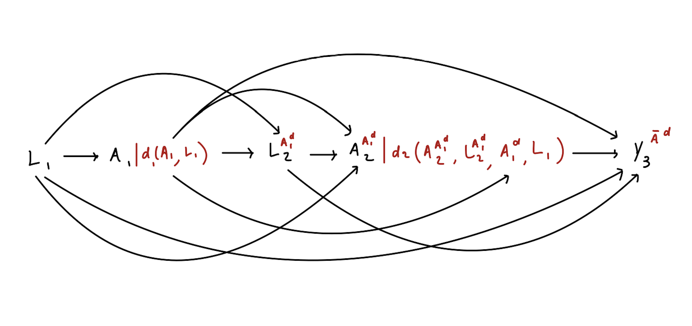

Defining General, Hypothetical Interventions
\[ \renewcommand{\P}{\mathsf{P}} \newcommand{\m}{\mathsf{m}} \newcommand{\p}{\mathsf{p}} \newcommand{\q}{\mathsf{q}} \newcommand{\bb}{\mathsf{b}} \newcommand{\g}{\mathsf{g}} \newcommand{\rr}{\mathsf{r}} \newcommand{\IF}{\mathbb{IF}} \newcommand{\dd}{\mathsf{d}} \newcommand{\Pn}{$\mathsf{P}_n$} \newcommand{\E}{\mathsf{E}} \]
Have you ever begun reading a paper in the methodological causal inference literature and encountered the phrase “assume the treatment or exposure is a binary…� (Most papers we read assume this!!) While assuming exposure variables are binary can simplify the definition of causal effects, many exposures of interest in reality are not binary.
Instead, we will work in situations where \(A\) is a binary, categorical, multivariate, or continuous variable!
In the previous section, we defined \(\dd(a_t, h_t, \epsilon_t)\) as a function that maps values \(a_t\), \(h_t\), and potentially a randomizer \(\epsilon_t\) to a new value of treatment. Let us see how this function is used to define a treatment effect. Our focus henceforth is estimating the causal effect of an intervention, characterized by \(\dd\) on the outcome \(Y\), through the causal parameter
\[ \theta = \E[Y^{\bar A^{\dd}}]\text{,} \]
where \(Y^{\bar A^{\dd}}\) is the counterfactual outcome in a world, where possibly contrary to fact, each entry of \(\bar{A} = (A_1, \ldots, A_\tau)\) was modified according to the function \(\dd\) as follows.
At time point \(t=1\), the post-intervention treatment is assigned as \(A_1^\dd = \dd(A_1, H_1)\). This generates a counterfactual treatment at time \(t=2\), denoted by \(A_2^{A_1^\dd}\). This is the treatment an individual would have gotten had the intervention been performed at time \(t=1\) but not at time \(t=2\).
At time point \(t=2\), the post-intervention treatment is assigned as \(A_2^\dd = \dd(A_2^{A_1^\dd}, L_2^{A_1^\dd}, A_1^\dd, L_1)\). This generates a counterfactual treatment at time \(t=3\).
This process is iteratively repeated until the end of the study. At that time, the counterfactual outcome \(Y^{\bar A^{\dd}}\) is generated.

This definition is agnostic to the type of outcome:
When \(Y\) is continuous, \(\theta\) is the mean population value of \(Y\) under intervention \(\dd\).
When \(Y\) is dichotomous, \(\theta\) is the population proportion of event \(Y\) under intervention \(\dd\).
When \(Y\) is the indicator of an event by end of the study, \(\theta\) is defined as the cumulative incidence of \(Y\) under intervention \(\dd\).
But what is this function \(\dd\), how can it be defined, and how does using this function to define interventions solve the problem? Let’s start from simple to more complex examples of functions \(\dd\).
Static Interventions
Let \(A\) denote a binary vector, such as receiving a medication, and define \(\dd(a_t, h_t, \epsilon) = 1\). This intervention characterizes a hypothetical world where all members of the population receive treatment at all times.
An intervention is static if the function \(\dd_t\) always returns the same value regardless of the input.
Example
Let’s say we were interested in the effect of randomizing patients with opioid use disorder to injection naltrexone (\(A=1\)) vs. sublingual buprenorphine (\(A=0\)). We would contrast the counterfactual outcomes in a hypothetical world in which all units were treated with injection naltrexone \(\dd_1=1\) versus a hypothetical world in which all units were treated with buprenorphine \(\dd_0=0\). This gives us the well-known average (comparative) treatment effect (ATE). \[\E[Y^{\bar A^{\dd_1}} - Y^{\bar A^{\dd_0}}] = \E[Y^{A=1} - Y^{A=0}]\]
Dynamic Treatment Regime
Let \(A_t\) denote a binary vector, such as receiving a medication, and \(L_t\) a numeric vector, such as a measure of discomfort. For a given value of \(\delta\), define \[ \dd(a_t, h_t, \epsilon) = \begin{cases} 1 &\text{ if } l_t > \delta \\ 0 &\text{ otherwise.} \end{cases} \]
Interventions where the output of the function \(\dd\) depends only on the history \(H_t\) are referred to as being dynamic.
Example
Rudolph, Williams, et al. (2022) examined a Buprenorphine (BUP-NX) dosing strategy among a population of patients who were taking BUP-NX for opioid use disorder. Under the hypothetical intervention, patients who reported opioid use during the week prior to a physicians exam received a BUP-NX dose increase while patients who did not report prior-week opioid use maintained the same dose. Let \(A_t\) be a binary indicator for BUP-NX dose increase at week \(t\) compared to week \(t-1\) and \(L_t\) be an indicator for opioid use at week \(t\). Then, \[ \dd(a_t, h_t, \epsilon) = \begin{cases} 1 \text{ if } l_{t-1} = 1\\ 0 \text{ otherwise} \end{cases} \]
Modified Treatment Policies
While much attention is given to static and dynamic interventions, their use is often accompanied by a few key problems.
Defining causal effects in terms of hypothetical interventions where treatment is applied to all units may be inconceivable. For example, we may be interested to know if reducing surgery time reduces surgical complications. However, it’s inconceivable to set all surgeries to a given duration, even if this duration depends on patient covariates.
Defining causal effects in terms of hypothetical interventions where treatment is applied to all units may induce positivity violations.
A solution to these problems is to instead define causal effects using modified treatment policies (MTP).
An intervention characterized by a hypothetical world where the natural value of treatment is modified is called a modified treatment policy.
Additive and multiplicative shift MTP
Let \(A_t\) denote a numeric vector. Assume that \(A_t\) has support in the data such that \(P(A_t \leq u(h_t) \mid H_t = h_t) = 1\). For an analyst-defined value of \(\delta\), define \[ \dd(a_t, h_t, \epsilon) = \begin{cases} a_t + \delta &\text{ if } a_t + \delta \leq u(h_t) \\ a_t &\text{ otherwise.} \end{cases} \]
Under this intervention, the natural value of exposure at time \(t\) is increased by the analyst-defined value \(\delta\), whenever such an increase is feasible. This MTP is referred to as an additive shift MTP.
Example
Dı́az et al. (2023) estimated the effect of increasing P/F ratio (\(A_t\))–a measure of hypoxemia–by 50 units on survival among those patients with acute respiratory failure (a P/F ratio < 300). \[ \dd_t(a_t, l_t, \epsilon) = \begin{cases} a_t + 50 &\text{ if } a_t \leq 300 \\ a_t &\text{ otherwise} \end{cases} \]
We can similarly define a multiplicative shift MTP as
\[ \dd(a_t, h_t, \epsilon) = \begin{cases} a_t \times \delta &\text{ if } a_t \times \delta \leq u(h_t) \\ a_t &\text{ otherwise}. \end{cases} \]
Example
Nugent and Balzer (2023) evaluated the association between county-level measures of mobility and incident COVID-19 cases in the United States in the Summer and Fall of 2022. They considered both hypothetical additive and multiplicative MTPs; for example, they defined a multiplicative MTP where a measure for the density of mobile devices visiting commercial locations was decreased by 25%: \[ \dd(a_t, l_t, \epsilon) = a_t \times 0.75. \]
Randomized Interventions
Let \(A\) denote a binary vector, \(\epsilon \sim U(0, 1)\), and \(\epsilon\) be an analyst-defined value between 0 and 1. We may then define randomized interventions. For example, imagine we are interested in a hypothetical world where half of all smokers quit smoking. This intervention would be defined as
\[ \dd(a_t, \epsilon_t) = \begin{cases} 0 &\text{ if } \epsilon_t < 0.5 \text{ and } a_t = 1 \\ a_t &\text{ otherwise} \end{cases}. \]
Incremental Propensity Score Interventions Based on the Risk Ratio
Let \(A\) denote a binary variable, \(\epsilon \sim U(0, 1)\), and \(\delta\) be an analyst-defined risk ratio limited to be between \(0\) and \(1\). In addition, define \(P(A_t = a_t\mid H_t)= \g(a_t \mid H_t)\).
If we were interested in an intervention that decreased the likelihood of receiving treatment, define
\[ \dd_t(a_t, h_t, \epsilon_t) = \begin{cases} a_t &\text{ if } \epsilon_t < \delta \\ 0 &\text{ otherwise} \end{cases}. \] In this case, we have \(\g^\dd(a_t \mid h_t) = a_t \delta \g_t(1 \mid H_t) + (1 - a_t) (1 - \delta \g_t(1\mid H_t))\), which leads to a risk ratio of \(\g_t^\dd(1 \mid H_t)/\g_t(1\mid H_t) = \delta\) for comparing the propensity score post- vs pre-intervention.
An intervention where the conditional probability of treatment is shifted is referred to as an incremental propensity score intervention.
Conversely, if we were interested in an intervention that increased the likelihood of receiving treatment, define
\[ \dd_t(a_t, h_t, \epsilon_t) = \begin{cases} a_t &\text{ if } \epsilon_t < \delta \\ 1 &\text{ otherwise.} \end{cases} \]
Now \(\g_t^\dd(a_t \mid H_t) = a_t (1 - \delta \g_t(0\mid H_t)) + (1 - a_t) \delta \g_t(0 \mid H_t)\), which implies a risk ratio \(\g_t^\dd(0\mid H_t)/\g(0\mid H_t) = \delta\).
Interventions where the shift is in the odds ratio scale were previously proposed, but the effects of odds-ratio shifts should not be estimated with lmtp, we will discuss this more later.
Example
Using electronic health record data, Wen, Marcus, and Young (2023) estimated the effect of increasing the proportion of PrEP uptake on bacterial STI among cis-gender males being tested for STIs and that do not have HIV. Let \(A_t\) be a binary indicator for PrEP initiation at week \(t\), and \(L_t\) be a binary indicator for any STI testing and being HIV-free at week \(t\). They defined a “medium†successful PrEP uptake intervention as \[ \dd(a_t, h_t, \epsilon) = \begin{cases} a_t &\text{ if } l_t = 1 \text{ and } \epsilon_t < 0.85 \\ 1 &\text{ otherwise}. \end{cases} \]
Identification of the causal parameter
Recall that the fundamental problem of causal inference is that we can’t observe the alternative worlds which we use to define causal effects. If we can’t observe counterfactual variables, then how can we learn a causal effect? Under a set of certain assumptions, we can identify a causal parameter from observed data. These assumptions are called identification assumptions.
Identification Assumptions
Positivity. If \((a_t, h_t) \in \text{supp}\{A_t, H_t\}\) then \(\dd(a_t, h_t) \in \text{supp}\{A_t, H_t\}\) for \(t \in \{1, ..., \tau\}\).
If there is a unit with observed treatment value \(a_t\) and covariates \(h_t\), there must also be a unit with treatment value \(\dd(a_t, h_t)\) and covariates \(h_t\).
No unmeasured confounders. All the common causes of \(A_t\) and \((L_s, A_s, Y)\) are measured and contained in \(H_t\) for all \(s \in \{t+1, ..., \tau\}\).
For all times \(t\), the history \(H_t\) contains sufficient variables to adjust for confounding of \(A_t\) and any subsequent variables, including future treatment.
Under these assumptions, the distribution of the natural value of treatment at time \(t\) is equal to the distribution of the observed value of treatment at time \(t\) conditional on the observed history.
Assuming the above, \(\theta\) is identified from the observed data with:
Set \(\m_{\tau+1} = Y\). In a slight abuse of notation, let \(A_t^\dd = \dd(A_t, H_t)\). For \(t = \tau, ..., 1\), recursively define
\[ \m_t: (a_t, h_t) \rightarrow \E[\m_{t + 1}(A^{\dd}_{t+1}, H_{t + 1}) \mid A_t = a_t, H_t = h_t], \]
and define \(\theta = E[\m_1(A^{\dd}_1, L_1)]\).
Example
Consider the following data (here \(\tau = 2\)):
and the intervention
\[ \dd(a_t, \epsilon_t) = \begin{cases} 0 &\text{ if } \epsilon_t < 0.5 \text{ and } a_t = 1 \\ a_t &\text{ otherwise.} \end{cases} \]
The true value under this intervention is approximately \(-0.37\). First, let’s translate this intervention into an R function.
We can then compute the identification formula in the following steps:
Set \(\m_3(A_3^\dd, H_3) = Y\)
Compute the regression of \(\m_3(A_3^\dd, H_3)\) on \((A_2, H_2)\). This gives a predictive function, call that predictive function \(\m_2(A_2,H_2)\).
Use the predictive function to compute what would have occurred if the intervention had been implemented at time \(t=2\), i.e., compute \(\m_2(A_2^\dd,H_2)\).
Compute the regression of \(\m_2(A_2^\dd,H_2)\) on \((A_1, H_1)\). This gives a predictive function, call that predictive function \(\m_1(A_1,H_1)\).
Use the predictive function to compute what would have occurred if the intervention had been implemented at time \(t=1\), i.e., compute \(\m_1(A_1^\dd,H_1)\).
Compute the mean of \(\m_1(A_1^\dd,H_1)\). This mean is equal to \(\theta\).
References
Dı́az, Iván, Katherine L Hoffman, and Nima S Hejazi. 2024. “Causal Survival Analysis Under Competing Risks Using Longitudinal Modified Treatment Policies.†Lifetime Data Analysis 30 (1): 213–36.
Dı́az, Iván, Nicholas Williams, Katherine L Hoffman, and Edward J Schenck. 2023. “Nonparametric Causal Effects Based on Longitudinal Modified Treatment Policies.†Journal of the American Statistical Association 118 (542): 846–57.
Haneuse, Sebastian, and Andrea Rotnitzky. 2013. “Estimation of the Effect of Interventions That Modify the Received Treatment.†Statistics in Medicine 32 (30): 5260–77.
Kennedy, Edward H. 2019. “Nonparametric Causal Effects Based on Incremental Propensity Score Interventions.†Journal of the American Statistical Association 114 (526): 645–56.
Nugent, Joshua R, and Laura B Balzer. 2023. “A Demonstration of Modified Treatment Policies to Evaluate Shifts in Mobility and COVID-19 Case Rates in US Counties.†American Journal of Epidemiology 192 (5): 762–71.
Rudolph, Kara E, Catherine Gimbrone, Ellicott C Matthay, Ivan Diaz, Corey S Davis, Katherine Keyes, and Magdalena Cerdá. 2022. “When Effects Cannot Be Estimated: Redefining Estimands to Understand the Effects of Naloxone Access Laws.†Epidemiology 33 (5): 689–98.
Rudolph, Kara E, Nicholas T Williams, Alicia T Singham Goodwin, Matisyahu Shulman, Marc Fishman, Iván Dı́az, Sean Luo, John Rotrosen, and Edward V Nunes. 2022. “Buprenorphine & Methadone Dosing Strategies to Reduce Risk of Relapse in the Treatment of Opioid Use Disorder.†Drug and Alcohol Dependence 239: 109609.
Wen, Lan, Julia L Marcus, and Jessica G Young. 2023. “Intervention Treatment Distributions That Depend on the Observed Treatment Process and Model Double Robustness in Causal Survival Analysis.†Statistical Methods in Medical Research 32 (3): 509–23.